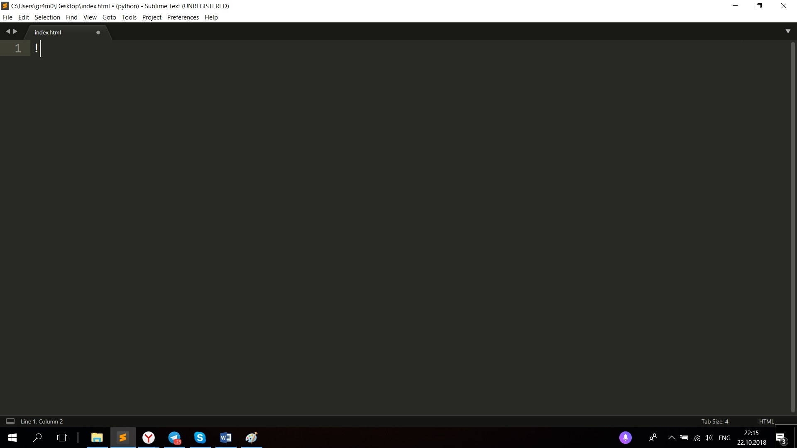

Архив с файлами:
Ссылка на скачивание примера сайтаКраткие теоретические сведения:
Веб-разработка – процесс создания веб-сайта или веб-приложения. Основными этапами процесса являются веб-дизайн, вёрстка страниц, программирование для веб на стороне клиента и сервера, а также конфигурирование веб-сервера.
HTML или Hyper Text Markup Language — язык разметки документов в Интернете.
CSS или каскадные таблицы стилей, используются для описания внешнего вида html-страницы.
HTML-тег -- структурная единица веб-страницы. Любая веб-страница состоит из тегов, как дом из кирпичей.
Мы с вами уже знаем несколько тегов:
- html - главный тег веб-страницы
- head - голова веб-страницы
- title - заголовок страницы во вкладке браузера
- body - тело страницы. Именно там находится все содержимое сайта
- p - текстовый тег
- img - тег для подключения изображений
Установка и настройка Sublime Text 3
Вот ссылка на скачивание дистрибутива: http://www.sublimetext.com/3
Скачиваем нужную нам версию и открываем программу;
Устанавливаем плагин Package Control
Выбираем пункт View -> Show Console
Копируем этот код, вставляем его в консоль и нажимаем Enter
import urllib.request,os,hashlib; h = '6f4c264a24d933ce70df5dedcf1dcaee' + 'ebe013ee18cced0ef93d5f746d80ef60'; pf = 'Package Control.sublime-package'; ipp = sublime.installed_packages_path(); urllib.request.install_opener( urllib.request.build_opener( urllib.request.ProxyHandler()) ); by = urllib.request.urlopen( 'http://packagecontrol.io/' + pf.replace(' ', '%20')).read(); dh = hashlib.sha256(by).hexdigest(); print('Error validating download (got %s instead of %s), please try manual install' % (dh, h)) if dh != h else open(os.path.join( ipp, pf), 'wb' ).write(by)
Выбираем пункт Package Control
Пишем в открывшемся окне Install Package и нажимаем Enter
Пишем в открывшемся окне Emmet и нажимаем Enter
Если всё прошло успешно, то появится такое окошко
Прячем консоль
Нажимаем сочетание клавиш Ctrl S, чтобы сохранить файл. Называем файл index.html и сохраняем его на рабочий стол
Пишем восклицательный знак и нажимаем клавишу TAB
Меняем атрибут en на ru в теге html. Сохраняем файл (Ctrl S)
Для того чтобы изменить название нашей страницы во вкладке браузера меняем текст в теге title. Сохраняем файл (Ctrl S)
Открываем нашу страницу в браузере. Для этого находим на рабочем столе файл index.html и дважды щелкаем на него.
Нажимаем английскую букву p и жмем клавишу TAB. Сохраняем файл (Ctrl S)
Между тегами p пишем произвольный текст. Сохраняем файл (Ctrl S)
Заходим в браузер и обновляем страницу (нужно нажать Ctrl R)

В теге head создаем новую строчку и пишем style
Нажимаем TAB. Сохраняем файл (Ctrl S)
Пишем следующий текст. Сохраняем файл (Ctrl S)
Заходим в браузер и обновляем страницу (нужно нажать Ctrl R)
Нажимаем TAB. Сохраняем файл (Ctrl S)
Заходим в браузер и обновляем страницу (нужно нажать Ctrl R)
Нажимаем клавишу F12. Находим тег p в веб-инспекторе
Меняем цвет текста. Обратите внимание, если мы обновим страницу (Ctrl R), то цвет текста не изменится. Поэтому копируем выбранный цвет (Ctrl С) и вставляем его в свойство color. Сохраняем файл (Ctrl S)
Сохраняем изображение на рабочий стол и переименовываем его
Нажимаем правой кнопкой мыши по изображению и выбираем пункт Свойства
Смотрим расширение изображения и запоминаем его. Всего есть три варианта: .jpg .png .jpeg

Пишем тег img в теге body. Этот тег подключает изображения к нашей странице
Жмем TAB и пишем имя и его расширение. В моем случае, имя файла - image, расширение - .jpg. Сохраняем файл (Ctrl S)